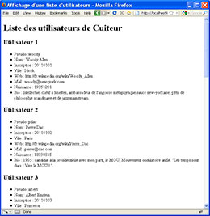
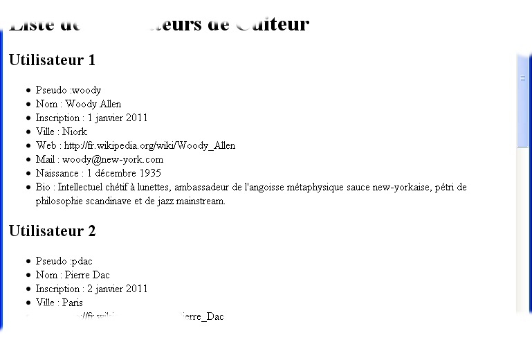
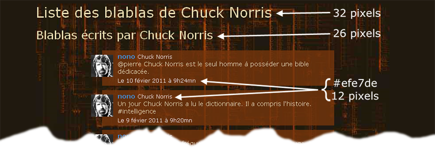

La réalisation de ce TP vous apprendra à afficher des listes de données provenant d'une base de données et vous aidera à réaliser les listes de blablas (messages) de l'application Cuiteur.
Vous devez avant tout lire le cahier des charges de l'application Cuiteur. Vous y trouverez la description des fonctionnalités de l'application, la description de la base de données à utiliser et la description de l'arborescence des répertoires.
Le travail est décomposé en 8 phases correspondant chacune à 8 scripts PHP, qui doivent se trouver dans le répertoire tp de votre répertoire de travail sur le serveur. Pour simplifier les choses et que vous soyiez concentré sur le code PHP, vous commencerez par réaliser l'affichage sans aucun style de mise en forme. Seul le dernier script fera une mise en pages / mise en forme, basée sur ce qui a été fait dans le TP2.
Vous utiliserez les fonctions suivantse pour gérer les erreurs de la base de données :
//___________________________________________________________________
/**
* Gestion d'une erreur de requête base de données.
*
* @param resource $bd Connecteur sur la bd ouverte
* @param string $sql requête SQL provoquant l'erreur
*/
function fd_bd_erreur($bd, $sql) {
$errNum = mysqli_errno($bd);
$errTxt = mysqli_error($bd);
// Collecte des informations facilitant le debugage
$msg = '<h4>Erreur de requête</h4>'
."<pre><b>Erreur mysql :</b> $errNum"
."<br> $errTxt"
."<br><br><b>Requête :</b><br> $sql"
.'<br><br><b>Pile des appels de fonction</b>';
// Récupération de la pile des appels de fonction
$msg .= '<table border="1" cellspacing="0" cellpadding="2">'
.'<tr><td>Fonction</td><td>Appelée ligne</td>'
.'<td>Fichier</td></tr>';
$appels = debug_backtrace();
for ($i = 0, $iMax = count($appels); $i < $iMax; $i++) {
$msg .= '<tr align="center"><td>'
.$appels[$i]['function'].'</td><td>'
.$appels[$i]['line'].'</td><td>'
.$appels[$i]['file'].'</td></tr>';
}
$msg .= '</table></pre>';
fd_bd_erreurExit($msg);
}
//___________________________________________________________________
/**
* Arrêt du script si erreur base de données.
* Affichage d'un message d'erreur si on est en phase de
* développement, sinon stockage dans un fichier log.
*
* @param string $msg Message affiché ou stocké.
*/
function fd_bd_erreurExit($msg) {
ob_end_clean(); // Supression de tout ce qui
// a pu être déja généré
echo '<!DOCTYPE html><html><head><meta charset="ISO-8859-1"><title>',
'Erreur base de données</title></head><body>',
$msg,
'</body></html>';
exit();
}
Vous devez nommer les scripts tels qu'ils sont nommés dans cet énoncé. Vous devez utiliser l'arborescence de répertoires se trouvant dans votre répertoire de travail. Toutes les scripts de ce TP doivent se trouver dans le répertoire tp.
Afficher les utilisateurs inscrits dans
Cuiteur (
liste_users_1.php
).
Il faut sélectionner dans la base de données les
utilisateurs et les trier par identifiant (
usID
). Les données seront affichées comme dans la copie
d'écean ci-contre. Utilisez des tags
h1
et
h2
pour les titres et des
ul
et
li
pour les informations sur un utilisateur. N'utilisez pas de feuille
de styles car l'important ici est PHP et pas une zolie page.
Réaliser une fonction de tranformation de date (
liste_users_2.php
).
Ecrivez la fonction permettant d'afficher les dates provenant de la
base de données (format aaaammjj) dans un format lisible (28
février 2011). La fonction s'appelle
xx_amj_clair()
, où xx sont vos initiales. Utilisez cette fonction pour
afficher les date d'inscription et de naissance des utilisateurs.

Réaliser et utiliser une bibliothèque de fonctions (
bibli_cuiteur.php
et
liste_users_3.php
).
liste_users_2.php
:
fd_bd_erreur() xx_amj_clair()
Copiez votre fichier
liste_users_2.php
en
liste_users_3.php
. Déplacer les fonctions
fd_bd_erreur()
et
xx_amj_clair()
du fichier
liste_users_3.php
dans un nouveau fichier
bibli_cuiteur.php
(une bibliothèque de fonctions). Incluez la
bibliothèque dans
liste_users_3.php
. Testez. Vous devez avoir les mêmes résultats qu'avec
liste_users_2.php
.
Dans
bibli_cuiteur.php
, écrivez la fonction
xx_html_debut()
qui affiche le début de la page HTML. La fonction a deux
arguments : le titre de la page, le nom d'un fichier de feuille de
styles. Le deuxième argument est facultatif. La signature de
ces fonctions doit être commentée avec la syntaxe PHPDoc
telle que vue en cours.
Dans
bibli_cuiteur.php
, écrivez la fonction
xx_bd_connection()
qui permet la connexion à la base de données Cuiteur.
La signature de ces fonctions doit être commentée avec
la syntaxe PHPDoc telle que vue en cours.
Utilisez ces fontions dans
liste_users_3.php
.
La liste des blablas d'un utilisateur est décomposée en trois sous-listes pour faciliter la prise en compte de l'otigine différentes des blablas à afficher. Pour simplifier les requêtes, on ne tiendra pas compte du recuitage éventuel des blablas.
Il faut afficher les blablas pour l'utilisateur Chuck Norris (usID 23) :Etape 1
Afficher les blablas écrits par Chuck Norris.
Il faut sélectionner dans la base de données les
blablas dont l'utilisateur 23 est l'auteur. |
Etape 2
Afficher les blablas écrits par les utilsateurs auxquels
est abonné Chuck (ses abonnements). (
Il faut sélectionner dans la base de données les
blablas dont les auteurs sont les abonnements de l'utilisateur 23
(table
|
Etape 3
Affichez les blablas mentionnant Chuck Norris. (
Il faut sélectionner dans la base de données les
blablas dont les auteurs mentionnent l'utilisateur 23 dans le
texte (table
|
Traitements communs (
liste_blablas_4.php
)
Comme le traitement des trois requêtes de sélection est
le même, ainsi que l'affichage des informations
sélectionnées dans la base de données,
écrivez dans
bibli_cuiteur.php
la fonction
xx_aff_blablas
qui effectue le traitement et l'affichage. La signature de cette
fonction doit être commentée avec la syntaxe PHPDoc
telle que vue en cours.
N'écrivez pas cette fonction avant d'avoir bien vérifié les résultats de vos trois requêtes, qui doivent être identiques à ceux affichés dans les copies d'écran ci-dessus.
Mise en page et la mise en forme de l'affichage
Copier votre feuille de styles du TP2 (ou celle fournie dans la
correction - conseillé), supprimez tout ce qui ne concerne pas
le coprs de la page et la liste des messages, puis enregistrez la
sous
tp3.css
. Gérez l'utilisation de cette feuille de styles dans Le
script
liste_blablas_5.php
.
Modifiez la fonction
xx_aff_blablas
pour quelle réalise l'affichage ci-dessous (on ne gère
pas l'affichage particulier des mentions et des tags) :

Réaliser l'affichage de tous les blablas dans une seule liste
et non plus dans trois sous-listes
(liste_blablas_6.php
). Les blablas sont classés du plus récent au plus
ancien.
Réaliser l'affichage de tous les blablas d'un utilisateur dont
l'identifiant est passé dans l'URL (
liste_blablas_7.php
).
Un fichier zippé contenant
liste_users_1.php
,
liste_users_2.php
,
liste_users_3.php
,
liste_blablas_1.php
,
liste_blablas_2.php
,
liste_blablas_3.php
,
liste_blablas_4.php
,
liste_blablas_5.php
,
liste_blablas_6.php
,
liste_blablas_7.php
,
bibli_cuiteur.php
,
tp3.css
. Vous devez déposer un fichier zippé et pas les
fichiers sources car ils seraient modifiés automatiquement par
moodle.